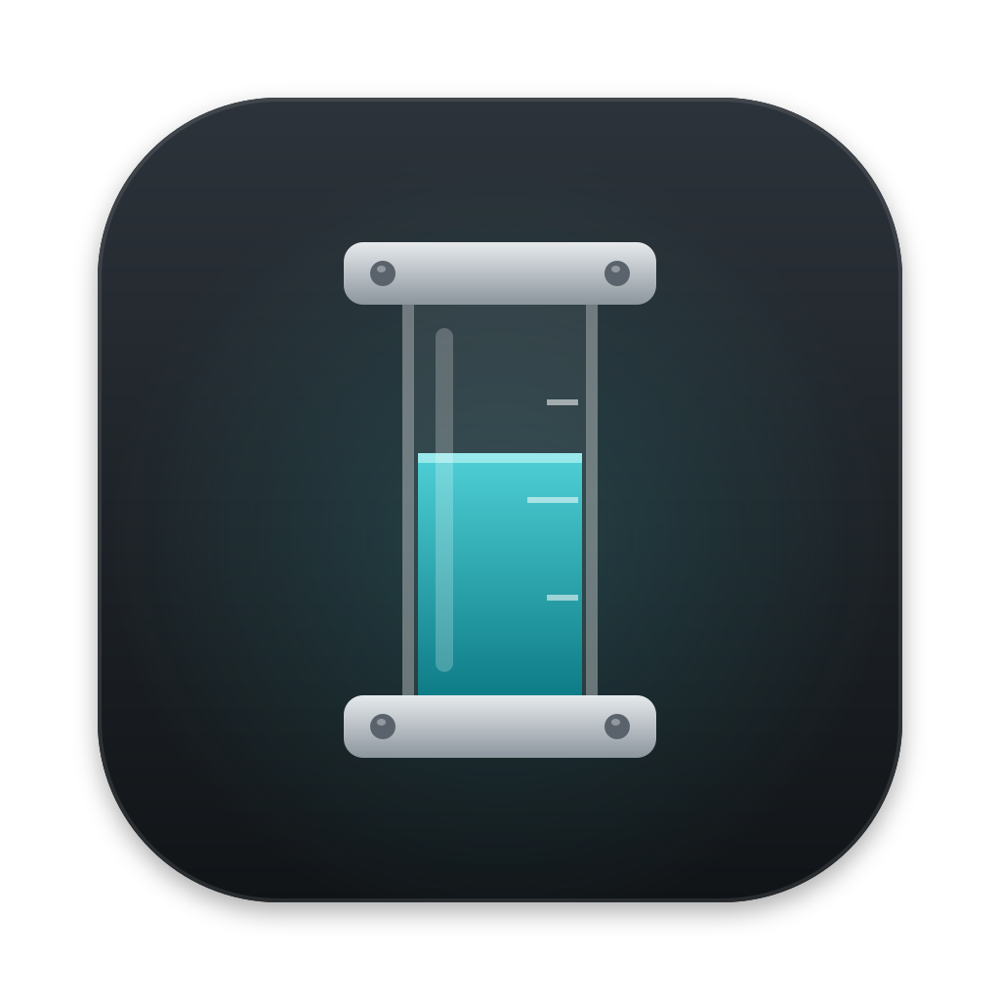

Sightglass
Un sight glass est le tube de verre qui montre le niveau d'une cuve. Sightglass se lit comme lui : d'un regard, sans mentir. Le chiffre est toujours écrit, la couleur confirme.
Icône de l'app

Icône de la barre des menus (gabarit monochrome)
Noir et transparence, teintée par macOS. Niveaux 0, 50, 80 et 100 %. Aucune couleur.
Clair
Sombre
Couleurs, jauges et typographie
Clair
bg
#F5F6F7surface
#FFFFFFtext
#15191Dtext2
#56606Aborder
#D3D8DDtrack
#E7EAEDaccent
#0B6E7AgaugeOk
#127A82gaugeWarn
#9A5800gaugeCrit
#C0302BSession 5 h0 %
repart dans 2 h 10 (14:30)
Semaine50 %
repart dans 2 h 10 (14:30)
Semaine · Fable80 %
repart dans 2 h 10 (14:30)
Session 5 h100 %
repart dans 2 h 10 (14:30)
Expirée34 %
valeur d'il y a 3 h
IndisponibleIndisponible
nouvel essai à 12:35
Titre : 17 px, semi-gras
Corps : 17 px, interligne 1,55
Secondaire : 13 px
Mono : sightglass status --json
0123456789 chiffres à chasse fixe
Sombre
bg
#111315surface
#1B1E21text
#ECEFF2text2
#9BA5AFborder
#30353Atrack
#2B3035accent
#5CC8D0gaugeOk
#3BBDC2gaugeWarn
#EFA63AgaugeCrit
#FF6F64Session 5 h0 %
repart dans 2 h 10 (14:30)
Semaine50 %
repart dans 2 h 10 (14:30)
Semaine · Fable80 %
repart dans 2 h 10 (14:30)
Session 5 h100 %
repart dans 2 h 10 (14:30)
Expirée34 %
valeur d'il y a 3 h
IndisponibleIndisponible
nouvel essai à 12:35
Titre : 17 px, semi-gras
Corps : 17 px, interligne 1,55
Secondaire : 13 px
Mono : sightglass status --json
0123456789 chiffres à chasse fixe